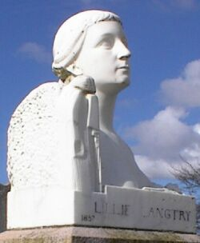

San Antonio, Texas,
U.S.A.
Lé 19 dé févri, 1972.
Moussieu l'Rédacteu,

La p'tite ville dé Langtry dans l'Êtat dé Texas est nommée en l'honneu d'nouot' belle Jersey Lily viyant qu'un Juge dé Paix nommé Roy Bean l'adouothait. Ch'tait d'liain, sans doute, tch'i' l'adouothait, car i' pathaît tch'i' n'put janmais la rencontrer personnellement, mais il est probabl'ye tch'i' l'avait veue au thiâtre à San Antonio, i' li' êcrivit plusieurs lettres qu' ou n'rêponnait pon, mais ou finnit par rêpondre la cheinne tch'il êcrivit à lî dithe tch'il avait nommé eune ville par san nom. Malheutheusement, il avait 'té mort tchiques mais quand oulle acceptit s'n invitâtion dé visiter Langtry en 1904. Sans doute, les lettres n'allaient pon par avion dans chu temps-là, et i' prannait des mais pour eune lettre à aller en Angliétèrre et eune rêponse à r'vénîn en Améthique.
Lé Juge Bean et Lily Langtry n'sont pus, mais la p'tite baraque tch'était en mème temps l'aubèrge et la Cour dé Justice du Juge es acouo là, présèrvée par l'Êtat dé Texas comme oulle 'tait dans san viyant. J'allis la vaie en m'en allant au Mexique l'aut' jour. Les noms sont en grand lettres en d'ssus et à l'entrée. Tout au haut Judge Roy Bean, Notary Public, et pis en d'ssus Justice of the Peace, Law West of the Pecos, et en pus grand lettres acouo en d'ssus d'l'autre : The Jersey Lilly. Des bieaux gardîns ont 'té êtablyis à l'entou pour lé pliaîsi d'un tas d'visite en tch'arrêtent exprès à Langtry touos les jours pour vaie la cour du Juge Bean.
Ch'tait à Dead Man's Gulch pas bein liain d'Langtry, qu' un crampon en argent finnit d'cliouer la voie ferrée transcontinentale du nouvieau train Sunset Route (lé Southern Pacific Railway d'nouos jours), lé 12 janvyi, 1883. Il allait tout l'long du c'mîn dé La Nouvelle Orléans, Louisiane, à San Francisco en Califournie. Il avait fallu hardi d'entréprinse et d'îngéniôsité pour surmonter les hautes banques d'à pic dé rotchi, et les tèrribl'yes couothants d'la riviéthe Pecos dans l's envithons d'Langtry.
Ordinnaithement, Langtry s'sait connu seulement à cause dé ch't' occâsion-là, mais la ville est actuellement dév'nue historique par la pèrsonnalité d'un homme et la bieauté d'Lily Langtry. Lé c'menchement du dgiex-neuviéme siécl'ye vit les grand' distances des Êtats-Unis ouvèrtes au publyi par lé c'mîn d'fé des trains transcontinentales, et des milles hommes dé toutes les sortes et d'toutes les couleurs 'taient engagis pour chu travas-là. À m'suthe qué l'travas avanchait, des p'tites villes et des villages dé tentes à soudard 'taient êtablyies pour les louogi. Y'avait tréjous la bande d'îndividus tchi vivent par la minséthe du genre human tchi les suivaient et tchi mangeaient lus sou, l's aubèrgistes, les joueux d'cartes, les joueux d'sou et les prostituées, et y'avait souvent des bastaudes, et dans un pays où'est qué l'pistolet est aussi nombreux comme des mouques à myi l'tou d'eune rueûque, le temps vint qué l's autoritès eûdrent à s'en mêler.
La Cour dé Justice la pus près des lieux 'tait à chent milles dé la, et l'gouvèrnément sé décidit de nommer un Juge dé Paix pour êprouver à arrêter chu tripot-là. Lé 2 d'août, 1882, lé Sieur Roy Bean tch'avait eune boutique à Vinegaroon, un village dé tentes nommé d'après les scorpions tch'étaient là en abondance, fut nommé Juge dé Paix pour lé comté d'Pecos. I' vendit sa boutique et êtablyit eune aubèrge dans eune pétite baraque tch'i' fit bâti à eune pliaiche pus liain où'est qu' la voie ferrée avait avanchi, et y siégit sa cour et donnit l'nom dé Langtry à la pliaiche viyant tch'il admithait tant Lily Langtry, et mînt san nom sus lé d'vant d'la Cour.
Du tout c'menchement, lé Juge sé montrit sévéthe. I' n'tait pon trop partitchulyi au sujet d'la louai - tch'i' n'connaissait pon fort. I' n'avait qu' un livre d'louai à li'aidgi, lé 1879 Revised Statutes of Texas, et il éthait d'habitude prîns trop longtemps a r'garder l'travers dé chu livre-la. À l'occasion, i' nommait un jury dé parmi les b'veux dans s'n aubèrge. Y'a un tas d'légendes entouorre ses jugements. Y'en a tchi disent tch'i' pendait les voleurs dé j'vaux. D'aut' disent qué nou-fait. Il est chose cèrtaine qué ch'tait eune offense tèrribl'ye dé voler des j'vaux, car ch'tait la seule manniéthe qu un homme avait, dans chu temps-là, pour aller dé bord-t-en autre. Y'a eune légende tchi nouos dit qu' un voleux d'mème s'empêchit d'êt' pendu par eune ruse. I' savait qué l'Juge 'tait grand admithateu dé Lily Langtry et i' li dit tch'il avait eune corle de ses j'veux, et qué s'il 'tait pendu i' n'pouorrait pon li donnait car i' l'avait muchie oû'est qu' personne né pourrait la trouver. Lé Juge lî donnit sa libèrté, et l'îndividu produisit la corle dans p'tit d'temps et la présentit au Juge. I' s'comportit comme i' faut, et auprès la mort du Juge il admîns qué la souodisante corle 'tait du crîn d'la crîngne dé san j'va tch'était d'la mème couleu comme les j'veux à la fanmeuse actrice!
George d'La Forge
Viyiz étout: